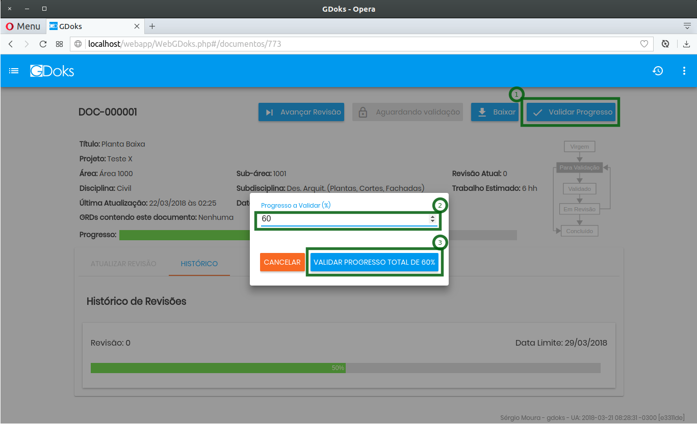
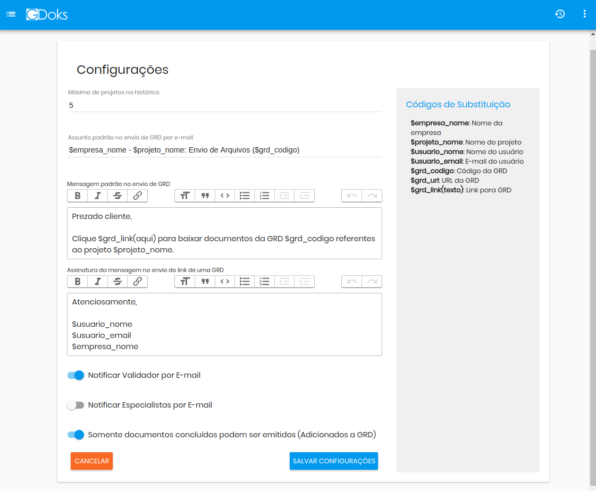

Usuários
Clique em Menu > Usuários para acessar a tela que lista os usuários
Clique em um dos usuários para alterar as informações deste usuário.
Ao final, clique em Salvar para que as alterações se tornem permanentes ou Cancelar para descartar
alterações realizadas. Os campos "Senha" e "Confirme a Senha" sempre aparecem em branco.
A senha do usuário só é alterada se estes campos forem preenchidos.

Você também pode alterar as permissões de acesso do usuário nesta tela.
Basta clicar na aba "Permissões". Marque as telas que o usuário terá acesso e, no painel direito,
as opções que serão permitidas ao usuário.
Ao final das alterações clique em "Salvar" para que elas se tornem permanentes.

Para cadastrar um novo usuário, clique em Menu > Usuários e depois no botão "Adicionar Usuário".
As permissões deste novo usuário só poderão ser alteradas depois que ele for criado
(clicar em "Salvar").
Clientes
Clique em Menu > Clientes para acessar a tela que lista clientes.
Clique em "Adicionar Cliente" para ir a tela de adicionar um novo cliente.

Alguns campos desta tela são auto explicativos. Segue explanação dos outros campos.
Login, Senha e Confirmação de senha
Estes campos são as informações de acesso que o seu cliente terá para ver os documentos publicados
na sua área do cliente.
Endereço FTP, Usuário do FTP e Senha do FTP
Se o seu cliente tiver um servidor FTP dedicado a receber os arquivos, as informações de acesso a
este servidor devem ser inseridas nestes campos.
Clique no botão "Salvar" para que as alterações se tornem permanentes
Disciplinas e Subdisciplinas
No GDoks, os documentos são classificados, entre outras coisas, por disciplina e subdisciplina.
A ideia é que cada disciplina represente uma área do conhecimento, como Engenharia Civil, Engenharia
Elétrica, Automação, etc. Subdisciplinas são subdivisões de uma disciplina.
O GDoks já tem cadastrada uma série de disciplinas com subdisciplinas nele.
É possível alterar qualquer disciplina e até mesmo cadastrar alguma outra.
Para isso, clique em Menu > Disciplinas.

Clique na disciplina que deseja alterar. Na primeira aba, podem ser alteradas o nome e a sigla da
disciplina ou, se preferir, inativa-la. Ao final da alteração, clique em "Salvar"
para que as alterações se tornem permanentes.
Na segunda aba, você verá as subdisciplinas desta disciplina. Poderá alterar subdisciplinas
clicando em uma delas no ícone de lápis. Ao final da alteração clique em "Salvar"
O processo para adicionar uma subdisciplina é semelhante, bastando clicar no botão "Nova Subdisciplina".
Especialistas e Validadores
Especialistas de uma disciplina são usuários do GDoks que serão capazes de atualizar/alterar
um documento desta disciplina.
Para adicionar um especialista a disciplina, basta começar a escrever o nome dele e selecioná-lo da
lista suspensa que aparecerá enquanto digita. Depois, clique em "Salvar" para que o novo conjunto de
especialistas seja efetivamente alterado.

Validadores de uma disciplina são usuários do GDoks que validam (ratificam) as alterações que os
especialistas fazem nos documentos. O processo de adição de um validador é análogo ao de adição de um
especialista.
O GDoks pode ser configurado de modo que ele envie um e-mail para um validador toda vez
que um documento da disciplina da qual ele é validador estiver esperando por validação.
Cargos
Quando criamos um projeto, nele cadastramos os documentos que farão
parte deste projeto. A cada um destes documentos, podemos determinar quantos HH (homem hora) serão
necessários para concluir este documento.
Para efeito de cálculo de custo para confecção de um documento, definimos aqui os cargos com seus
respectivos valores de HH.
Log de Utilização do GDoks
Todas as ações realizadas no GDoks que alterem de alguma forma as informações nele armazenada
são registradas. Fica registrada assim a ação, o usuário que a realizou, em que instante e outras
informações que descrevam a ação.
Esses registros podem ser vistos acessando Menu > Log e ficam armazenadas por 2 (dois) anos.
Projetos
Para ver uma lista dos projetos ativos, clique em Menu > Projetos.
Aparecerá uma lista com os projetos lançados no GDoks que ainda estão ativos. Em destaque, aparecerão
os últimos projetos acessados pelo usuário que está logado no GDoks.
Para incluir na lista os projetos inativos, clique no botão "Mostrar Projetos Inativos".
Assim como em várias outras telas, pode-se utilizar o campo de busca para se localizar um projeto.
Clicando na linha do projeto você irá para uma tela que exibirá informações gerais sobre o projeto
como documentos, andamento geral e GRD's emitidas neste projeto.
Clicando sobre o ícone "lápis" de um projeto, você irá para a tela de edição do um projeto.
Será lá nesta tela onde serão definidas informações como nome, código do projeto, cliente,
documentos, áreas e subáreas do projeto. A partir desta tela, também é possível baixar uma lista de
documentos de um projeto (Baixar LDP).
Cadastrando Projetos
Para cadastrar um projeto clique em Menu > Projetos e em seguida no botão "Cadastrar Novo Projeto".
Preencha todos os campos e clique em salvar. As outras abas (Áreas, Documentos de Abertura de Operações
e Documentos) ficarão habilitadas.
Áreas e Subáreas
As áreas de um projeto são o primeiro nível de subdivisão de um projeto. Podem representar divisões
físicas ou geográficas em um projeto. As subáreas são divisões de uma área.
Para se cadastrar uma área, clique na aba "Área" e depois no botão "Nova Área". A medida que áreas novas
sejam inseridas, elas serão listadas na tela.
Caso o projeto não seja grande o suficiente a ponto de justificar tal divisão/subdivisão, recomenda-se
cadastrar somente uma área e, dentro desta, somente uma subárea.
Para o cadastro de uma subárea, role a tela para baixo e clique no botão "Nova Subárea".
O processo de criação de uma subárea é muito semelhante.
Documentos de Abertura de Operações (DAOs)
São documentos que, de alguma forma, caracterizam o projeto. Como exemplo, podemos citar o contrato de
prestação de serviço, atas de reunião, definições de escopo e proposta aprovada. Clique no botão
"Selecione" e selecione os arquivos desejados.
Para selecionar mais de um arquivo mantenha a tecla ctrl do teclado e clique sobre os arquivos
desejados.
Dê um nome para cada arquivo que deseja subir para o GDoks clique no botão "Salvar Documentos de
Abertura de Operações".
Cadastrando Documentos no Projeto
Existem duas maneiras de cadastrar documentos em um projeto:
Modo 1 - Um a um
Clique na aba "Documento" na tela de edição do projeto. Depois clique no botão "+ Novo Documento".
Aparecerá um formulário que deve ser preenchido de acordo com as instruções contidas nele.
Feito isso, clique no botão "Salvar Documento".

Pronto. Um documento do projeto foi cadastrado. Na tela que segue, você verá algumas opções.
Você poderá clonar o documento já existente, alterar o cadastro do documento ou remover o
documento criado. A medida que os documentos vão sendo criados, eles vão sendo acrescentados a lista.
Note que o documento não tem ainda nenhum arquivo. Ele somente foi cadastrado no GDoks com várias
informações referidas a ele.
Modo 2 - Em Lote
É possível informar ao GDoks todos os documentos de um projeto de uma só vez. Ele faz isso interpretando
as informações de uma planilha modelo, que pode ser baixada no próprio GDoks, na aba "Documentos",
clicando no botão "Baixar Modelo Para Importação".
Feito isso, você deve preencher a planilha com as informações dos documentos do projeto, levando em
conta algumas restrições que o GDoks impõe para que seja mantida a consistência e integridade dos dados.
São elas:
- Código Único: O GDoks não permite que dois documentos possuam o mesmo código.
-
Relação Disciplina/Subdisciplina: O GDoks não permite que você atribua uma subdisciplina a um
documento que não seja subdisciplina da disciplina escolhida.
Os códigos de área e subáreas da planilha serão adicionados ao projeto.
Caso já exista uma área/subárea com o código inserido na planilha, essa área/subárea será utilizada.
Para importar a lista de documentos, depois dela pronta, basta clicar no botão "Implortar" e selecionar
o arquivo que contém a lista de documentos, baseado no modelo baixado.
Inativando Projetos
É uma boa prática inativar projetos que foram concluídos para que eles não sejam mais listados na tela
inicial. Também fica bloqueado a criação de GRDs e documentos para projetos inativos.
A qualquer momento o projeto pode ser reativado.
Para inativar um projeto, vá até a aba "Dados" da tela de edição de projeto, desmarque a opção "Ativo"
e clique em salvar.
Documentos
Ao clicar em Menu > Documentos você será direcionado para uma página de busca de documentos.
A busca pode utilizar vários critérios como o próprio formulário sugere
Uma vez que o documento desejado seja encontrado ele pode ser acessado clicando-se sobre ele.
Os últimos documentos acessados são listados no acesso rápido no canto superior direito da tela.
Clicando em qualquer item do menu acima te levará para a tela do documento ao qual ele se refere.
O fluxo de trabalho geral pelo qual o documento passa pode ser descrito nos seguintes passos:
- Bloquear documento
- Atualizar/Alterar o documento (fora do GDoks)
- Transmitir arquivo atualizado do documento para o GDoks
- Validar alterações no documento
Esses passos são repetidos até que o documento seja dado como concluído (validado com 100% de progresso).
Por padrão, o GDoks é configurado para que somente documentos concluídos possam ser emitidos para o
cliente. Tendo sido emitido para o cliente este documento não poderá ser alterado, exceto se uma nova
revisão deste for criada (clicando no botão "Avançar Revisão").
A política "Somente documentos concluídos podem ser enviados para o cliente" pode ser flexibilizado na
tela de configurações do GDoks.
Bloquear um Documento
Qualquer usuário que seja especialista da disciplina de um determinado documento poderá trabalhar neste
documento. Contudo, o primeiro passo para que isso seja feito é o bloqueio documento. Isso evita que
um especialista-A sobreponha as alterações realizadas por um especialista-B.
É então fundamental que, antes de bloquear um documento, o especialista tenha certeza de estar
trabalhando na última versão oficial dele. Para isso, ele pode simplesmente "Baixar" a ultima versão da
revisão atual do documento clicando no botão "Baixar".
Tendo a certeza de ter a última versão oficial do documento, o especialista pode bloquear o documento
clicando no botão "Bloquear". Quando ele faz isso, existem apenas dois destinos para o documento no
GDoks: Ou ele é desbloqueado sem nenhuma alteração (clicando no botão "Desbloquear") ou ele
atualiza/altera o documento (fora do GDoks) e transmite os arquivos atualizados para o GDoks.
Trataremos deste segundo caminho a seguir.
Atualizar/Alterar um Documento
Imagine então que o documento foi baixado pelo especialista e bloqueado para ser alterado.
O especialista faz as alterações devidas nos arquivos do documento em sua máquina, usando o programa
adequado para a alteração do arquivo (Word, Excel, AutoCAD, etc). Feita essa alteração, deseja-se então
atualizar o documento no GDoks.
Cabe então ao especialista acessar a tela do documento, clicar na aba "Atualizar Revisão" e
depois no botão "Selecionar Arquivos (Máximo ___ MB)".
Uma janela se abrirá onde o especialista da deve selecionar os arquivos que compõem a nova versão do
documento. Ele então deverá fornecer qual o progresso que aquela atualização representa para o andamento
do documento e, caso o documento esteja atrasado, ele deverá preencher o campo "Observação" com a
justificativa para o atraso. Também poderá nesse momento dizer o número de páginas que cada arquivo
possui e o tamanho.

Observe as diferenças da tela depois que o documento é atualizado com o envio do(s) arquivo(s):
- A imagem que indica o status do documento muda de "Em Revisão" para "Para validação"
-
Caso o usuário logado seja um também um validador da disciplina, o botão "Validar Progresso"
ficará habilitado.
-
A aba "Atualizar revisão" está fica desabilitada, aguardando algum validador validar o progresso
do documento.
-
O botão de bloquear ou desbloquear documento fica desabilitado exibindo a mensagem "Aguardando
Validação"
-
A barra de progresso indica 50% em verde.
Validar Documento
O GDoks, por padrão, é configurado para enviar um e-mail para todos os validadores de uma disciplina
que tenha um documento alterado e precisando de validação.
Também pode ser exibido na tela inicial do GDoks a informação de quantos documentos o usuário logado
tem para validar.
Estando na tela do documento a ser validado, basta que o validador clique no botão "Validar Progresso".
Uma janela se abrirá para que o validador determine qual o valor real do progresso. Por padrão, o campo
já vem preenchido com o progresso que o especialista determinou.
Cabe o validador acetar aquele progresso ou alterá-lo para mais ou para menos.

Observe as diferenças na tela depois que um documento é validado:
- A imagem que indica o status do documento muda de "Para validação" para "Validado".
- A barra de progresso agora está em azul, indicando que aquele progresso foi validado.
- Caso o validador também seja especialista da disciplina, o botão "Bloquear" aparecerá habilitado.

Validação em Lote
A tela "Validação" permite que um validador veja todos os documentos que precisão de validação e que
podem ser validados por ele. Basta então que ele marque os documentos que deseja validar, atribua um
progresso para cada um deles e clique no botão "Validar Documentos Selecionados". Essa tela pode ser
acessada clicando em Menu > Validação.
Avançar Revisão de Documento
Um documento pode ter sua revisão avançada (ex: sair de Rev 0 para Rev 1).
Em geral, isso é realizado depois que um documento emitido é criticado pelo cliente.
Quando um documento tem sua revisão avançada e ele se encontra em uma outra revisão, seu status volta a
ser virgem mesmo que ele contenha já alguns arquivos da revisão anterior.
O fluxo de trabalho com o documento então se reinicia:
- Bloquear documento
- Atualizar/Alterar o documento (fora do GDoks)
- Transmitir arquivo atualizado do documento para o GDoks
- Validar alterações no documento
Para avançar a revisão de um documento basta clicar no botão "Avançar Revisão" na tela do documento.
Atualizar Documento (Avançado)
Em algumas situações um documento é composto por vários arquivos.
Para atualizar um documento composto por vários arquivos, o especialista só necessita enviar para o
GDoks o(s) arquivos que foram alterados. Por exemplo, imagine que um documento é inicialmente composto
por dois arquivos de nomes 0001.pdf e 0002.pdf. Depois, em um dado momento, o especialista deseja
atualizar este documento enviando dois arquivos:
- 0002.pdf, que é o mesmo 0002.pdf mas com algumas
- 0003.pdf que é um arquivo novo no documento
Nestas condições, o GDoks exibiria uma tela como mostra a figura abaixo:
Observe que:
-
O arquivo 0001.pdf, por já existir no GDoks, aparece listado mesmo não tendo sido
selecionado pelo especialista. É dada a opção ao especialista de manter este arquivo ou
remove-lo do documento.
-
O arquivo 0002.pdf já existe no documento e está sendo enviado novamente (Preexistente para
Atualizar). O GDoks entende que este arquivo será atualizado (sobrescrito) pela nova versão
que está sendo enviada.
-
O arquivo 0003.pdf ainda não existe no documento até o presente momento. O GDoks então irá
armazenar este arquivo como sendo um novo arquivo do documento.
GRD - Guia de Remessa de Documentos
Uma Guia de Remessa de Documento (ou GRD) é a forma com que o GDoks
envia os documentos para os seus clientes.
De modo geral, uma GRD consiste em um arquivo pdf que lista e descreve os arquivos contidos na GRD
acompanhado pelos arquivos que compõe os documentos, organizados em pastas. O arquivo PDF é fornecido
pela empresa como modelo. Este modelo será implementado no GDoks.
Criar GRD
Para criar uma GRD clique em Menu > GRD. Selecione o cliente e em seguida um dos projetos do cliente.
TOdos os documentos do projeto do cliente serão listados, porém, somente os que tiverem a última revisão
completa poderão ser marcados para fazerem parte da GRD. Clique no botão "Salvar GRD".
Uma GRD que ainda não enviada para o cliente pode ser alterada quantas vezes seja necessário.
Uma vez enviada, ela pode ser reenviada sem nenhuma restrição. Apenas não poderá ser alterada.
Pode-se alterar parâmetros de um documento dentro da GRD como número de vias, número de folhas,
Código EMI.
Também pode-se registrar o endereço físico de um documento emitido.
Enviar GRD para Cliente
Existem três maneiras de se enviar uma GRD para o cliente
- Publicar na Área do Cliente
- Enviar por e-mail link para baixar GRD
- Fazer upload de GRD no servidor FTP do cliente
Publicar na Área do Cliente
Um cliente cadastrado no GDoks pode ter um login e senha definidos no seu cadastro. Esses login
e senha podem ser utilizados para acessar uma área na qual ele terá acesso às GRD's publicadas.
O acesso a área do cliente, por padrão, é feito pelo endereço
www.gdoks.com.br/clientes/nome_da_sua_empresa/.
O formulário de acesso à área do cliente também pode ser incorporado no site da sua empresa
com total transparência para o seu cliente.
Enviar por e-mail link para baixar GRD
Nesta opção, o cliente receberá um e-mail com um link para baixar a GRD.
A mensagem, o assunto e a assinatura do e-mail podem ser configuradas para um valor
padrão. Mesmo assim, na hora do envio, essas informações podem ser alteradas de acordo com a necessidade
do usuário.
Podem ser adicionados até 3 (três) destinatários para o envio da mensagem que contém o link para GRD.
Fazer upload de GRD no Servidor FTP do cliente
Esta opção somente fica disponível se o cliente tiver em seu cadastro definidos endereço, login e senha
de acesso ao servidor FTP do cliente.
Registrar Observações do Cliente
Quando uma GRD é enviada para um cliente, espera-se que este cliente retorne, dando os arquivos que
compõem a GRD como concluído. Contudo, é possível que o cliente faça algumas observações sobre um dado
documento.
Com o GDoks é possível registrar essas observações do cliente e ainda acionar o especialista para que
este possa voltar trabalhar nos documentos em questão o quanto antes. Para tanto, abra a GRD que está
sendo criticada pelo cliente e clique na aba "Retorno de GRD". Selecione o documento criticado
e preencha os outros campos. Também é possível anexar arquivos a esta observação. Ao final, clique no
botão "Salvar"
O resultado será a observação registrada e os especialistas da disciplina notificados quanto a
observação do cliente. Outras observações ainda podem ser inseridas repetindo este processo.
Configurações Gerais
A tela Menu > Configurações concentra as mais diversas configurações do GDoks.

Máximo de projetos no histórico
É o número máximo de projetos que aparecem listados em destaque na lista de projetos.
Assunto padrão no envio de GRD por e-mail
No envio do link de uma GRD para um cliente por e-mail o assunto já vem preenchido com um texto
padrão. É muito importante que este assunto possua informações curtas relevantes para que os seus
clientes não acharem que se trata de um vírus. É importante então que o assunto do e-mail transmita
credibilidade a quem recebe o e-mail.
Para isso, você pode utilizar os códigos de substituição relacionados no quadro da direita. Esses
códigos (começados com $) serão, na hora do envio, substituídos pelas palavras às quais eles correspondem.
Exemplo:
E empresa ENGEMAX está trabalhando num projeto chamado "Linha Savana" para o cliente "Savanas LTDA".
O nome do contato é Miguel Aleixo. Se está enviando a GRD-2018-000003 para o cliente.
O assunto padrão poderá está configurado assim:
$empresa_nome - $projeto_nome: Envio de Arquivos ($grd_codigo)
Na hora do envio da mensagem se transformará em:
ENGEMAX - Linha Savana: Envio de Arquivos (GRD-2018-000003)
Mensagem padrão no envio de GRD
Análogo ao item anterior (assunto da mensagem), mas a possibilidade de alguma formatação de texto.
Assinatura no envio de GRD
Análogo ao item anterior (Mensagem)
Notificar Validador por E-mail
Quando habilitada, envia um e-mail para os validadores de uma disciplina que tenha um documento
precisando de validação
Notificar Especialistas por E-mail
Quando habilitada, envia um e-mail para os especialistas para avisar que algum documento precisa da
atenção deles.
Somente Documentos Concluídos podem ser emitidos
Se habilitado, só poderá ser emitido (incluído numa GRD) o documento que estiver completo (progresso total em 100%).
Troca de Senha
A qualquer momento um usuário dentro do GDoks pode trocar as suas informações de login e senha.
Para isso, basta acessar o menu no canto superior direito e clicar em "Trocar Senha", preencher os
campos de acordo e clicar em "Salvar".
Se os campos "Senha" e "Confirmação de Senha" não forem preenchidos a senha não será alterada.